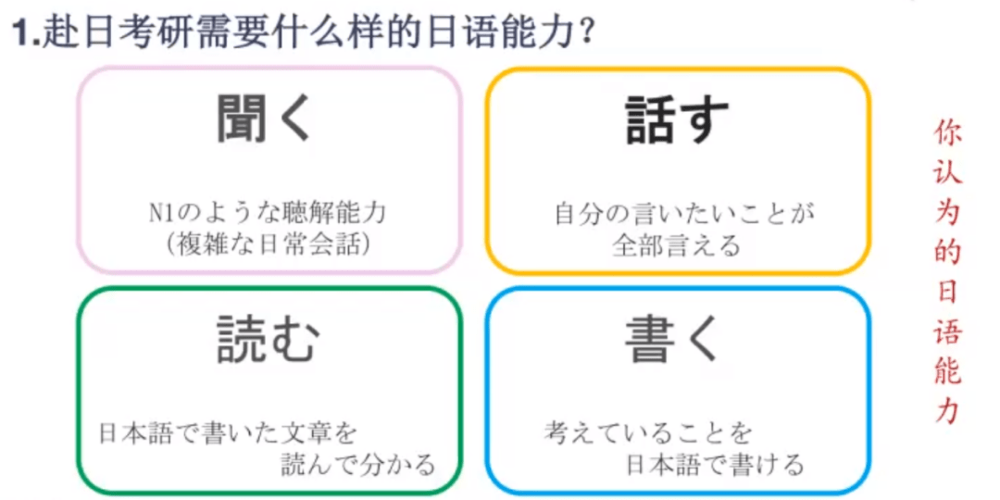

学习方法
01
打好基础
五十音相当于汉语拼音，会读会写的第一步。在五十音中,先把平假名给背了,片假名慢慢来，因为在日常生活中还是平假名用到的更多。五十音并不一定一开始就要全部背熟,大概掌握就可以马上进入第二步。
02
基础文法
系统的学习N5-N4的知识，学会所有动词变形和基础文法，更好的对日语语法有一个系统的认识。有了基础的单词量和语法，就要学会说完整的句子了！而学习句型的最好方法就是弄清楚该句型的来龙去脉，并且要大胆的造句，少则两句，多则五句，这样就能弥补平时应用的不足。

03
听说读写
“听”大部分日语初学者参与日语能力考试（JLPT），都是在听力部分得分不高。听力只有花大量时间多听。听新闻、看电视、追剧都是不错的方法。
“说”要想办法创造语言环境。对于初学者，最大的妨碍就是不敢说，其实我们能够想象一下，外国人说中文，虽然他发音不标准，虽然语序不对，只要不是太离谱，我们完全能够了解对方想表达的意思。
“读”对我们来讲应该是最简单完成的，大部分人学习日语根本上都是教科书开端的，工作中也是许多的文档。技术文档相对比较简单，教科书阅览量太小，所以除此之外，尽量有意识的加大自己的阅览量。
“写”在日常日子中，用到最多的大部分就是邮件，IT界可能就是各种仕様書，各种深掘资料，学生可能更多的是论文。
04
逐步提高
在学习教材的过程中，我们也逐渐形成了日语体系，能看懂简单的文章.这时候就应该进行归纳整理，让我们的词汇库、语法库越来越丰富。可以开始进行日语阅读，不仅仅是学习教科书上的内容，报刊杂志、时事新闻、书、综艺都可以看，在这个过程中，不仅能够扩展词汇量，也能够了解单词在实际中的运用。每天坚持读一篇文章，增加词汇量，学习新语法。